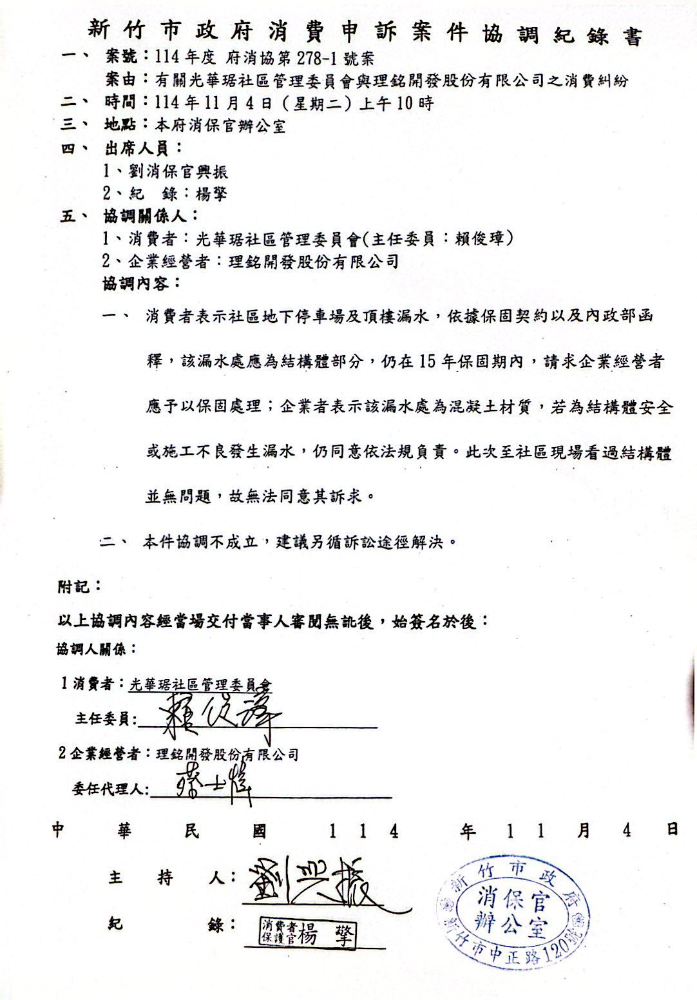

消保官行政調解確認失敗 (方案 0 歷史紀錄)
本社區管理委員會曾於民國114年11月4日，依法指派代表前往新竹市政府消保官辦公室，與建商「理銘開發股份有限公司」進行官方協商調解，惟建商無和解誠意、調解不歡而散（發文字號：府消保字第1140170912號），勝率已定調為 0% 結案。為保障社區權益，大會特此提出後續處置方案（方案A、B、C）供區權人進行實質投票。

各方案綜合評估與財務預算對比表
| 評估項目 | 方案 0 (歷史紀錄) 消保官調解 (已失敗) |
方案 A (直接修繕) 不訴訟 / 社區自理 |
方案 B (一審訴訟) 委託撰狀 或 律師全權代理出庭 |
方案 C (訴訟到底) 上訴到底與高階全面鑑定 |
|---|---|---|---|---|
| 時程與狀態評估 | ||||
| 目前狀態 | 已不成立結案 | 直接自費修好 | 正式提起一審民事訴訟 | 若一審敗訴向建商上訴到底 |
| 預估時間成本 | 約 2 ~ 3 個月 (已消耗) |
1-3 個月 |
一年以上 (一審訴訟與鑑定程序) |
未知 (跨審級與全面鑑定) |
| 跨屆管委會負擔 | 無 (已結案) | 無 (當屆立刻解決) | 高 | 極高 (跨2~3屆管委) |
| ⚖️ 委任律師狀態對比 | ||||
| 律師代理出庭 (是否委任律師) |
無 (消保官協商) |
無 (自行委外施工) |
依出庭意願彈性決定 (可僅委任撰狀 或 全權代理) |
有 (律師全權代理出庭) |
| 💰 社區公積金提撥與預算規模 | ||||
| 社區管理費預估支出 (由公積金專戶提撥) |
0 元 | 0 (已從管理費收取) |
17.2萬 ~ 23.5萬 (取決於律師委任程度/含預估鑑定費用) |
431,700 元 (含土木公會高階鑑定) |
社區公積金撥付與管理費調整預警說明
經大會決議，本案所有款項將由管理費專戶全額提撥，不另向住戶收取額外分攤款
社區公設管理費公積金
全體住戶無需額外掏款繳付個別分攤金。本漏水工程修繕、起訴書狀、訴訟裁判費、法院鑑定費等前期代墊預算，將全數自社區專戶扣款支出。
預估最高達數十萬
無論採取直接修繕（方案A 14.28萬）或進入法律訴訟，大會撥付規模均甚鉅。管委會將秉持最客觀中立、不涉偏袒原則提撥使用。
不足則提高每坪管理費
【重要條款】若後續法律訴訟期拉長或產生大額法院鑑定支出，致使社區公積金餘額低於安全防護水位，將依法提案提高每坪管理費收費標準以維大樓營運。
線上表決提交成功！
感謝您的熱心參與，本戶之表決結果已同步存入大會系統。
開票率：0.0%
代表出席意願率：0.0%
跨屆交接同意率：0.0%
漏水處置方案 - 得票即時動態分布
已表決區權人名冊列表
| 姓名 | 戶別 | 聯絡電話 | 表決方案 | 出席代表意願 | 跨屆續告 | 時間 |
|---|
如何將此表決系統與 Google 試算表同步連動？
本系統支援「無伺服器直接向雲端寫入數據」。只需 3 步驟，便可將網頁產生的實名投票數據自動同步至您的 Google 試算表中：
建立一個 Google 試算表，將首行（A1~G1欄位）分別建立名稱：Timestamp, Name, Unit, Phone, Option, Attend, CrossTerm。
在試算表中點選「延伸功能」 > 「Apps Script」，將網頁底部註解中的 GAS 接收程式碼貼上，點擊「部署」為「網頁應用程式」，並設定存取權限為「任何人」。
將部署生成的 URL 網址複製，並貼入本 HTML 檔案底部的 const GOOGLE_SCRIPT_URL = "您的URL網址" 變數中，存檔後即完成實體雲端串接！